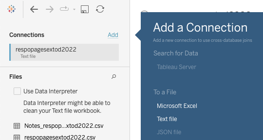
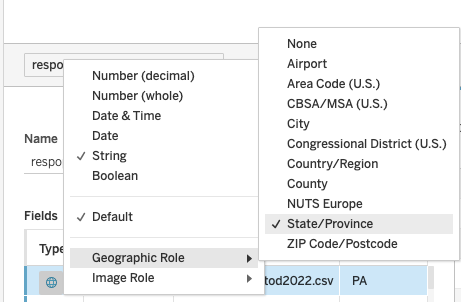
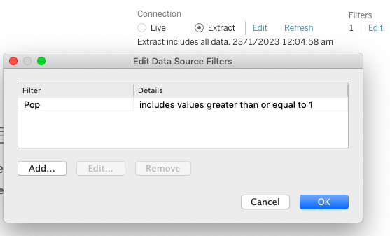
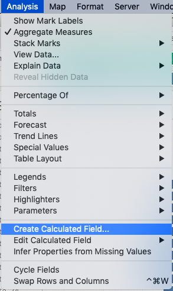
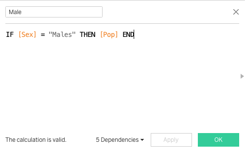

Take Home Exercise 1
Creating Age-Sex pyramids to showcase distribution of Singapore Residents in various Geographic Planning Areas
The Task
Create Age-Sex Pyramid visualisation to support analysis of demographic distribution across Planning Areas. A Trellis display should be used to display nine selected planning areas within one view. Yay test (Time to Test) ## Key Analysis
- In June 2022, there are 4.08 million Singapore residents living in 41 Planning Areas.
- The gender distribution is approx 51% (female), 49% (male). 19.3% of the city’s residents are aged below 20, whilst 31.1% of its residents are aged 55 and above.
- Planning Areas (PA) Bedok, Tampines, Jurong West, Sengkang and Woodlands have the highest number of residents. Each PA houses at least 250,000 people.
- Conversely, if the analysis is narrowed to focus on residents aged 60 and above, we observe that the most populated areas for this group is Bedok, Tampines, Hougang, Jurong West, Ang Mo Kio.
- The table below shows the difference in Age-Sex distribution between the 5 most populous Planning Areas amongst residents aged 60 and above.

- By visual analysis, we observe that some areas (i.e Tampines, Hougang) have a lesser proportion of adults aged between 35 to 55 living in these Planning Areas.
- This is juxtaposed against areas like Bedok and Jurong West, where the area population appears to be supported by adults aged between 25 to 65.
- Ang Mo Kio, unlike the other areas, appears to be “bottom-heavy”, indicating a stronger proportion of elderlies living in the area. Based on the data available, we know that most of these elderlies are living in 3-room and 4-room HDB flat. We can hypothesize that some of these elderlies may be living alone and may require societial support.
And here’s a step-by-step guide on how to create this Age-Sex Pyramid!
Data Extraction
Data was obtained from Department of Statistics, Singapore (SingStat) data on Population trend - available here.
- Under the section on Population Trends, search for “Singapore Residents by Planning Area / Subzone, Age Group, Sex and Type of Dwelling”
- There are multiple versions representing different time horizons or snapshot dates to choose from.
- For the purpose of this exercise, snapshot data of June 2022 was used.
Step-by-Step Description
Cleaning the data
| No. | Description | Image |
|---|---|---|
| 1. | Load the .csv file into Tableau Desktop. |  |
| 2. | Ensure that data is in the correct format. Planning Area (PA) should be geographically tagged, whilst Population (Pop) should be a calculated value. Note: Geographically tagging the PA will allow further analysis via map plots. |
 |
| 3. | Filter away Null values by using Filters button on the top Right-Hand corner. Filters (Add) > “Add...” > Select field “Pop” > Under “At least” tab > Enter “1” |
 |
You’re now ready to create your Tableau charts!
Creating the worksheet
| No. | Description | Image |
|---|---|---|
| 1. | Create calculated fields to represent division of male and female population. Analysis > Create Calculated Field… > Create field “Female” with the following code IF [Sex] = “Females” THEN [Pop] END |
 |
| 2. | Likewise, do the same for “Male” |  |
| 3. | Drag and drop the fields “Sex” and “Pop”, representing Gender and Number of residents resepectively, under Columns. Drag and drog the fields “PA” and “AG”, representing Planning Area and Age Group respectively, under Rows. |
|
| 4. | In a Age-Sex Pyramid, we want to distribution of gender to be differentiated by colour. Drag the variable “Sex” under Colour to create this differentiation. |
|
| 5. | Select “Bar” under chart type. | |
| 6. | To create a pyramid, right-click on the left column (either “Male” or “Female”) in the X-axis and choose to “Edit Axis..”> General > Scale > Reversed |
|
| 7. | Create a filter for Planning Area by dragging the field “PA” under filters. Select General > Select from list Then, Right click to show filter |
|
| 8. | Check that the age groups are chronologically distribution, rename the title, rows, columns (where applicable). Optional: If you wish to view Planning Areas by columns instead of by rows, be sure to drag the PA variable to columns instead! |
|
| 9. | Create a dashboard and drag your sheet into the dashboard. | |
| 1. | Create calculated fields to represent division of male and female population. Analysis > Create Calculated Field… > Create field “Female” with the following code IF [Sex] = “Females” THEN [Pop] END |